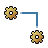

| Artefacto: Canal de servicio |
|  |
|
Objetivo
Relaciones
| Artefacto del contenedor | ||
|---|---|---|
| Roles | Responsable: | Modificado por: |
Descripción
| Descripción principal | Un canal representa la vía de acceso de comunicación entre dos servicios. Es importante observar que la interacción se
puede producir a través de un canal pero que el canal no representa ninguna interacción en particular. En el mundo de los
servicios web, cada servicio indica los enlaces asociados con él (para que un cliente pueda acceder a él). En un perfil de
modelado, se indica el enlace en la comunicación entre servicios o entre un servicio y los clientes. De esta forma, puede
ser flexible en el entendimiento de los requisitos de enlace. |
|---|
Personalización
Más información
| Directrices |
|---|
© Copyright IBM Corp. 1987, 2006. Reservados todos los derechos. |